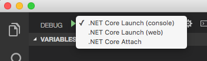

Opening and debugggin an ASP.Net Core application in Visual Studio Code
By now, this should be a simple process and, in all, similar to what was follow for the console application.
-
Open folder in VS Code
In the CLI run
$ code . -
Install needed assets
As before, VS Code needs some components to be able to run and debug the new type of project. Click "Yes"

-
Select Web Debug
Go to the "Debug" tab, click the dropdown next to the green arrow and select ".Net Core Launch (web)"
 -
Run the web application
The default web browser should open in the same URL as before and display the same "Hello World!"